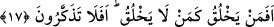
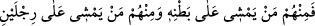
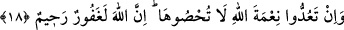

nîmetlerin şükrü ve hidâyeti gerektirdiğini, hidâyeti dilediğine tahsis ettiğini beyan
etmiştir. Nitekim Allah Teâlâ: “Dileseydi hepinizi hidâyete erdirirdi.” (en-Nahl, 16/9)
buyurmuştur.
17. O halde, yaratan (Allah), yaratmayan (putlar) gibi olur mu? Hâla
düşünmüyor musunuz?
“O halde” bu muazzam mükevvenâtı “yaratan” Allah Teâlâ “yaratmayan” hiçbir
şeyi yaratmaya gücü bile olmayan putlar “gibi olur mu?” Aceba zikredilen bütün bu
mahlûkâtı yaratan kimdir?
‘ ’ ism-i mevsûlü akıllı varlıklar için kullanılır. Putperestler onları “ilah” diye
isimlendirdiği için onlar da akıllılardan sayılarak onlar için de kullanılmıştır. Ya da “
(İşte bunlardan kimi karnı üstünde sürünür,
kimi iki ayağı üstünde yürür.)” (en-Nûr, 24/45) âyetinde olduğu gibi Hâlık
(yaratan)’ın karşısında kullanıldığı için onunla birlikte aynı ism-i mevsul kullanılmıştır.
Hemze, istifhâm-ı inkârî (olumsuz soru) hemzesidir. Yâni, tevhîdin delillerinin ortaya
çıkmasından sonra da Allah’ın mahlûka benzemesi ve ortaklığı tasavvur edilebilir mi?
Yâni Hâlık’ın mahlûka hiç benzerliği yoktur. İmdi âcizi Kâdir’e ortak tutmak inâdın son
noktası ve cehâletin zirvesidir. Durum aksini gerektirdiği halde yaratanın yaratmayana
benzetilmesinin tercih edilişi, yaratma melekesi var olanın var olmayana öncelik hakkı
olduğundandır.
“Hâlâ düşünmüyor musunuz?” Yâni, ey Mekke halkı, bunu düşünüp de içinde
bulunduğunuz durumun yanlışlığını anlamaz mısınız? Zira bu, düşünüp ibret almaktan
başka bir şeye gerek bırakmayacak kadar açıktır.
18. Allah’ın nîmetini saymaya kalksanız, onu sayamazsınız. Hakîkaten Allah çok
bağışlayan, pek esirgeyendir.
“Allah’ın nîmetini” üzerinizdeki Allah’ın daha zikretmediği nîmetleri “saymaya
kalksanız, onu sayamazsınız.” şükrünü yerine getirmek şöyle dursun, toplu olarak bile
onların sayısını belirlemeye ve sınırlandırmaya gücünüz yetmez.
Vücûdum üzerindeki her kıl O’nun ihsânıdır
Her bir kıl için nasıl şükredeyim?